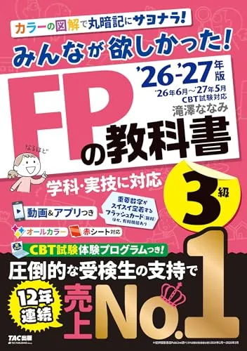
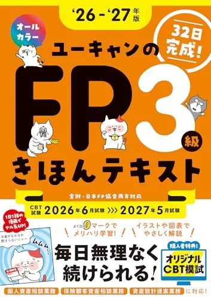
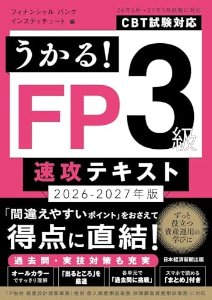

FP3級のおすすめテキスト3選【2026-2027年度版·独学】
FP3級技能検定のテキスト選びは、学科60問90分·実技20問60分·同日150分のCBT形式とセットで決めます。本記事は2026-2027年版のみんなが欲しかった! FPの教科書3級、32日で完成！ユーキャンのFP3級 きほんテキスト、うかる！ FP3級 速攻テキストの3冊を、章立て·演習接続·予算で比較します。価格・在庫・版情報は執筆時点（2026-06-12）のAmazon税込参考です。
この記事の信頼性について
| 執筆 | FP3級マスター編集部（資格学習サイトの編集チーム） |
|---|---|
| 確認 | 公式情報確認担当（公開前に一次情報との照合を行う担当者） |
| 事実確認日 | 2026-06-12 |
| 主な参照元 |
16/14：テキスト選びの3基準（学科36問·実技60点前提）
FP3級のテキストは、6科目の章立てとCBT演習への接続が最優先です。選ぶ前に日本FP協会要項で学科60問·実技20問·合格ライン60％を確認し、次の3点で比較してください。たとえば残り16週·週6時間なら、平日30分テキスト+土曜3時間演習が続きやすい配分です。
| 観点 | 確認内容 |
|---|---|
| 6科目網羅 | ライフプラン·リスク·金融資産·タックス·不動産·相続の目次 |
| 演習接続 | 章末問題→当サイト一問一答→学科40問通しまでつながるか |
| 予算 | 受験料8,000円とは別枠で1冊1,760円前後に収まるか |
3冊同時購入は避け、要項確認と演習計測のあとに1冊決定してください。教材はテキスト1冊+当サイト演習が基本です。
おすすめテキスト3選（比較）
価格・在庫・版情報は執筆時点（2026-06-12）のAmazon税込参考です。購入前に必ず販売ページでご確認ください。
| 順位 | 商品名 | 価格（税込参考） | ページ数 | 向いている人 |
|---|---|---|---|---|
| 1 | 2026-2027年版 みんなが欲しかった! FPの教科書3級 | ¥1,760 | 460 | 6科目をフルカラーで体系的に学びたい独学者・メインテキスト定番 |
| 2 | 32日で完成！ユーキャンのFP3級 きほんテキスト '26～'27年版 | ¥1,760 | 464 | 32日カレンダーで1日の学習量を固定したい初学者 |
| 3 | うかる！ FP3級 速攻テキスト 2026-2027年版 | ¥1,760 | 504 | 学習時間が限られる人・実技パターン解説を厚くしたい人 |

2026-2027年版 みんなが欲しかった! FPの教科書3級
- CBT移行後の新NISA・相続時精算課税など最新改正を反映
- 姉妹書「FPの問題集3級」と章立ての相性がよい
- 社会人独学で売上No.1クラスの定番テキスト

32日で完成！ユーキャンのFP3級 きほんテキスト '26～'27年版
- 1日1話のマンガ導入で続けやすいオールカラー構成
- 章末練習問題とCBT模試特典で演習接続しやすい
- 金財・日本FP協会の両試験団体に対応

うかる！ FP3級 速攻テキスト 2026-2027年版
- 「ここが出る」PDFでスマホ学習に対応
- 実技試験の出題パターン解説が厚い
- 債券利回り・相続計算の例題が初学者向け
23冊の比較表（価格·判型·向き不向き）
比較表は「安い順」ではなく、学習スタイルと実技対策の厚みで選んでください。執筆時点（2026-06-12）のAmazon税込参考です。購入前に販売ページで再確認が必要です。
| 順位 | 書名 | 税込参考 | 向いている人 |
|---|---|---|---|
| 1 | みんなが欲しかった FP3級 | 1,760円 | 6科目をフルカラーで体系的に学びたい人 |
| 2 | ユーキャン32日 | 1,760円 | 1日の学習量をカレンダーで固定したい人 |
| 3 | うかる速攻 | 1,760円 | 時間が限られ実技パターンを厚くしたい人 |
いずれも最新2026-2027年版を選び、旧版は制度改正（新NISA等）で抜けが出ます。2社テキストを半分ずつ読むと第8週で正答率が下がるパターンが多いです。
3みんなが欲しかった FP3級：売上定番·姉妹問題集と縦串
「2026-2027年版 みんなが欲しかった! FPの教科書3級」（TAC出版·滝澤ななみ著·A5判460頁·Amazon税込参考1,760円）は、独学のメインテキストとして最も選ばれている定番です。
向いている人：金融未経験で6科目を1冊で回したい人、イラスト解説で用語のイメージを固めたい人、姉妹書「FPの問題集3級」と章立てを揃えたい人。たとえば7/5購入→8月末第1周50％→9月から学科40問通し、の流れと相性がよいです。
- ユーキャン·うかるとの使い分け：全体像と演習の縦串を重視するならみんなが欲しかった
- 32日で習慣化したいならユーキャン
- 実技パターンを先に押さえるならうかる
- が目安
4ユーキャン32日：1日1話マンガ·CBT模試特典
「32日で完成！ユーキャンのFP3級 きほんテキスト '26～'27年版」（自由国民社·464頁·Amazon税込参考1,760円）は、FP合格カレンダーで1日の学習量が明確な習慣づくり型です。
- 向いている人：忙しくて毎日の分量がぶれやすい社会人
- マンガ導入で学習を続けたい人
- 書籍特典のCBT模試で画面演習を早めに体験したい人
6/21の演習20問で55％未満が3科目以上なら、7月からユーキャンで第1周→8月にみんなが欲しかったへ移行する判断も有効です。
- みんなが欲しかったとの使い分け：ユーキャンは習慣化
- 深い論点整理はみんなが欲しかった
- と役割を分け同時に2冊開かないでください
5うかる速攻：実技パターン·スマホPDF
「うかる！ FP3級 速攻テキスト 2026-2027年版」（日本経済新聞出版·504頁·Amazon税込参考1,760円）は、「ここが出る」PDFと実技試験パターン解説が厚い速攻型です。
- 向いている人：週3〜4時間しか取れない人
- 金財·日本FP協会どちらの実技を選ぶか迷っている人
- 債券利回り·相続計算の例題で型を固めたい人
学科の網羅性ではみんなが欲しかったを優先し、うかるは実技対策の補助冊として第2冊目以降に検討するのが安全です。
- ユーキャンとの使い分け：毎日コツコツならユーキャン
- 週末にまとめて実技パターンを読むならうかる
- が配分の目安
6購入順序·演習·16週例（6〜10月）
テキストは「要項確認→演習計測→1冊決定→当サイト演習増量」の順で段階投入します。6/12開始·週6時間の例です。
| 時期 | 購入·学習 | 演習 |
|---|---|---|
| 6月 | 要項·3冊比較 | 一問一答20問/日·55％記録 |
| 7月 | 7/5テキスト1冊 | 週30問·記録・分析（/#dash） |
| 8月 | 弱点2科目を厚く | 学科40問通し·36問目標 |
| 9月 | — | 実技20問60分·週2回 |
| 10月 | 直前復習のみ | 同日150分通し1回 |
問題集はテキスト第1周40％以降に1冊追加。試験2週前からは新規購入を止め解き直しに集中してください。
7次に読む：独学計画とオンライン講座
テキスト1冊が決まったら、次の記事へ進んでください。
・ゼロからの手順 → 金融知識ゼロからの第一歩
・紙とアプリ → 紙テキストとアプリの使い分け
・勉強時間 → 勉強時間の目安
・動画併用 → オンライン講座の比較
・無料演習 → 過去問を解く（無料）
収益リンクは比較表のAmazonボタンと本文下の関連リンクに集約しています。
8よくある質問
テキストは1冊で足りますか？
初学者は何を最初に買えばよいですか？
みんなが欲しかったとユーキャンはどちらがよいですか？
記事の基本情報
| ジャンル | 比較・選択系 |
|---|---|
| タグ | 独学 / 参考書 |
公式情報の確認
公式情報の確認：ファイナンシャル・プランナー試験（FP3級）の最新情報は、日本FP協会（公式）などの公式情報を必ず確認してください。本人に割り当てられた試験会場は受験票の表記が正本です。